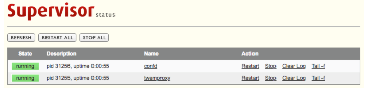

Supervisor 工具：管理服务程序的利器！
我们在日常开发的过程中，使用的 Supervisord 是用 Python 实现的一款进程管理工具，要求被管理的程序是非守护进程的程序，其会帮你把它转成守护进程程序。它是一个 C/S 系统，其提供 WEB 接口给用户查询和控制, 并允许用户去监控和控制在类 UNIX 系统的进程。它的目标与 launchd、daemontools 和 runit 有些相似，但是与它们不一样的是, 它不是作为 init(进程号 pid 是 1)运行。它是被用来控制进程，并且它在启动的时候和一般程序并无二致。
- [1] 简单
通常管理 linux 进程的时候，一般来说都需要自己编写一个能够实现进程 start / stop / restart/ reload 功能的脚本，然后丢到 /etc/init.d/ 下面。这么做有很多不好的地方，第一我们要编写这个脚本，这就很耗时耗力了。第二，当这个进程挂掉的时候，linux 不会自动重启它的，想要自动重启的话，我们还要自己写一个监控重启脚本。而 supervisor 则可以完美的解决这些问题。
怎么解决的呢？其实 supervisor 管理进程，就是通过 fork/exec 的方式把这些被管理的进程，当作 supervisor 的子进程来启动。这样的话，我们只要在 supervisor 的配置文件中，把要管理的进程的可执行文件的路径写进去就可以了。第一这样就省下了我们管理 linux 进程的时候，自己写控制脚本的麻烦了。第二，被管理进程作为 supervisor 的子进程，当子进程挂掉的时候，父进程可以准确获取子进程挂掉的信息的，所以当然也就可以对挂掉的子进程进行自动重启了。当然重启还是不重启，也要看你的配置文件里面有木有设置 autostart=true 了。
- [2] 精确
为什么说精确呢？因为 linux 对进程状态的反馈，有时候不太准确。而 supervisor 监控子进程，得到的子进程状态无疑是准确的。进程组 supervisor 可以对进程组统一管理，也就是说咱们可以把需要管理的进程写到一个组里面，然后我们把这个组作为一个对象进行管理，如启动/停止/重启等等操作。而 linux 系统则是没有这种功能的，我们想要停止一个进程，只能一个一个的去停止，要么就自己写个脚本去批量停止。
- [3] 集中式管理
我们使用 supervisor 管理的进程和进程组信息，全部都写在一个 ini 格式的文件里就可以了。而且，我们管理 supervisor 的时候的可以在本地进行管理也可以远程管理，而且 supervisor 提供了一个 web 界面，我们可以在 web 界面上监控，管理进程。 当然了，本地远程和 web 管理的时候，需要调用 supervisor 的 xml_rpc 接口。并且 supervisor 能够运行在绝大多数操作系统上面，并且具有很高的稳定性。
- [4] 有效性
当 supervisor 的子进程挂掉的时候，操作系统会直接给 supervisor 发信号。而其他的一些类似 supervisor 的工具，则是通过进程的 pid 文件来发送信号的，然后定期轮询来重启失败的进程，显然 supervisor 更加高效。
- [5] 可扩展性
我们知道 supervisor 是个开源软件，可以直接去改软件。不过咱们大多数人还是老老实实研究 supervisot 提供的接口吧，supervisor 主要提供了两个可扩展的功能。一个是 event 机制，这个可以研究下。再一个是 xml_rpc 接口，supervisor 的 web 管理端和远程调用的时候，就要用到它了。
- [6] 权限管理
大伙都知道 linux 的进程，特别是侦听在 1024 端口之下的进程，一般用户大多数情况下，是不能对其进行控制的。想要控制的话，必须要有 root 权限。而 supervisor 提供了一个功能，可以为 supervisord 或者每个子进程，设置一个非 root 的 user，这个 user 就可以管理它对应的进程了。
1. 快速安装
参考Supervisor 官方文档详细查看每一种安装方式
- [1] yum
# CentOS安装easy_install工具
$ yum install -y python-setuptools
# 安装supervisor工具
$ easy_install supervisor
- [2] apt
# Ubuntu直接apt安装就可以了
# 自动生成/etc/supervisor目录和supervisord.conf配置文件
$ apt-get install supervisor
- [3] build
# 下载官方对应安装包
$ tar zxf supervisor-xxxx.tar.gz
# 直接安装
$ cd supervisor
$ python setup.py install
- [4] pip
# 使用pip安装
$ pip install supervisor
2. 快速配置
参考来自《进程管理利器-supervisor 部署记录》 => 侵权删除
- 当我们通过上述方式安装工具之后，对应的目录下面并没有我们需要的配置文件目录和文件，所以这就需要我们自行创建默认
/etc/supervisord.d目录和/etc/supervisord.conf配置文件，即如果没有则自行创建。
# 创建默认配置文件
$ echo_supervisord_conf > /etc/supervisord.conf
# 启动默认配置
$ supervisord -c /etc/supervisord.conf
# 检查进程
$ ps aux | grep supervisord
- 在
/etc/supervisord.d的目录下创建conf和log两个目录，conf用于存放管理进程的配置，log用于存放管理进程的日志。
# 创建配置文件目录和日志
$ mkdir -pv /etc/supervisord.d/conf
$ mkdir -pv /etc/supervisord.d/log
- 修改
/etc/supervisord.conf的[include]部分，将我们需要的服务配置文件的目录添加到其中，即启动服务的时候自动帮我们载入/etc/supervisord.d/conf目录下的所有配置。
# CentOS系统的配置文件
$ vim /etc/supervisord.conf
...
[supervisord]
logfile=/var/log/supervisor/supervisord.log
logfile_maxbytes=50MB
logfile_backups=10
loglevel=info
pidfile=/tmp/supervisord.pid
nodaemon=false
...
[include]
files = supervisord.d/conf/*.conf
...
# Ubuntu的配置文件
$ cat /etc/supervisor/supervisord.conf
[unix_http_server]
file=/var/run/supervisor.sock
chmod=0700
[supervisord]
logfile=/var/log/supervisor/supervisord.log
pidfile=/var/run/supervisord.pid
childlogdir=/var/log/supervisor
[rpcinterface:supervisor]
supervisor.rpcinterface_factory = supervisor.rpcinterface:make_main_rpcinterface
[supervisorctl]
serverurl=unix:///var/run/supervisor.sock
[include]
files = /etc/supervisor/conf.d/*.conf
- 虽然我们一般不用配置
supervisord.conf文件，但是了解其中的重要参数还是必要的。
# unix_http_server
;[unix_http_server]
;file=/var/run/supervisor.sock ; socket文件的路径，用XML_RPC和supervisord进行通信，非必须设置
;chmod=0700 ; 修改上面的那个socket文件的权限，非必须设置
;chown=escape:docker ; 修改上面的那个socket文件的属组，非必须设置
;username=escape ; 连接的时候认证的用户，非必须设置
;password=123456 ; 用户名对应的密码，可用明码和SHA加密，非必须设置
# inet_http_server
;[inet_http_server] ; 侦听在TCP上的socket
;port=*:9001 ; 侦听的IP和端口
;username=root ; 连接的时候认证的用户，非必须设置
;password=1234 ; 用户名对应的密码，可用明码和SHA加密，非必须设置
# supervisord
;[supervisord] ; 主要是定义supervisord服务端进程的一些参数
;logfile=/var/log/supervisor/supervisord.log ; supervisord主进程的日志路径，非必须设置
;logfile_maxbytes=50MB ; 日志文件的最大的大小，超过则生成新的日志，非必须设置
;logfile_backups=10 ; 日志文件保持的数量，默认为10个，非必须设置
;loglevel=info ; 日志级别，非必须设置
;pidfile=/var/run/supervisord.pid ; supervisord服务的pid文件路径，非必须设置
;nodaemon=false ; 如果是true的话，supervisord进程将在前台运行，默认后台以守护进程运行
;umask=022 ; 进程创建文件的掩码
;user=escape ; 以root启动之后，该用户可以对supervisord进行管理
;identifier=supervisor ; 多个supervisor且想调用XML_RPC统一管理，就需要为每个设置不同的标识符
;directory=/tmp ; 作为守护进程运行的时候会先切换到这个目录
;childlogdir=/var/log/supervisor ; 当子进程日志路径为AUTO的时候，子进程日志文件的存放路径
;environment=KEY="value" ; 设置环境变量，会被子进程继承
# rpcinterface
;[rpcinterface:supervisor] ; 给XML_RPC用的
;supervisor.rpcinterface_factory = supervisor.rpcinterface:make_main_rpcinterface
# supervisorctl
;[supervisorctl] ; 主要是针对supervisorctl的一些配置
;serverurl=unix:///var/run/supervisor.sock ; 注意这个是和前面的[unix_http_server]对应的
;username=root ; 用户名
;password=1234 ; 密码
;prompt=mysupervisor ; 输入用户名密码时候的提示符
;history_file=~/.super_history ; 参数和shell中的history类似
# include
;[include]
;files = /etc/supervisor/conf.d/*.conf ; 读取配置文件的路径，支持匹配扩展
- 进入到
/etc/supervisord.d/conf目录，创建管理应用的配置，可以创建多个应用配置。第一个是示例文档中关于定义启动应用的配置说明，我这里截取出来以备后续使用的时候翻看。
# program
;[program:theprogramname] ; 必填选项，其格式为[program:应用名称]
;command=/bin/cat ; 启动命令，可以使用参数，不能是守护进程
;process_name=%(program_name)s ; 当numprocs为1时，process_name=%(program_name)s;
当numprocs>=2时，%(program_name)s_%(process_num)02d
;numprocs=1 ; 启动的进程数量，默认为1个，类似进程池的概念
;directory=/tmp ; 程序的执行目录
;umask=022 ; 指定掩码，默认为None
;priority=999 ; 指定优先级，值越高、最后启动、最先被关闭，默认值999
;autostart=true ; 当supervisor启动时，程序将会自动启动
;startsecs=1 ; 启动1秒后没有异常退出就当作已经正常启动
;startretries=3 ; 启动异常重试次数，超过这个次数就认为失败
;autorestart=unexpected ; 程序异常退出后不会自动重启，true表示自动重启
;exitcodes=0,2 ; 当退出码是0和2时，执行重启，默认值0和2
;stopsignal=HUP ; 进程停止信号，默认为TERM，TERM/HUP/INT/QUIT/KILL等
;stopwaitsecs=10 ; 当向子进程发送stopsignal信号后，到系统返回信息给supervisord
服务所等待的最大时间。超过这个时间，supervisord会向该子进程发
送一个强制kill的信号
;stopasgroup=false ; 主要用于supervisord管理的子进程，这个子进程本身还有子进程。
那么我们如果仅仅干掉supervisord的子进程的话，子进程的子进程
有可能会变成孤儿进程。设置这个选项，把整个该子进程的整个进程组
都干掉。设置为true的话，一般killasgroup也会被设置为true的。
需要注意的是，该选项发送的是stop信号
;killasgroup=false ; 和上面的stopasgroup类似，不过发送的是kill信号
;user=escape ; 用哪个用户启动
;redirect_stderr=true ; 如果为true，则stderr的日志会被写入stdout日志文件中，默认false
;stdout_logfile=/a/path ; stdout日志文件路径
;stdout_logfile_maxbytes=1MB ; stdout日志文件大小，默认50MB
;stdout_logfile_backups=10 ; stdout日志文件备份数，默认10次
;stdout_capture_maxbytes=1MB ; 设定capture管道的大小，当值不为0时，子进程可以从stdout
发送信息，而supervisor可以根据信息，发送相应的event。
默认为0，为0的时候表达关闭管道。
;stdout_events_enabled=false ; 当设置为ture的时候，当子进程由stdout向文件描述符中写日志的时
候，将触发supervisord发送PROCESS_LOG_STDOUT类型的event，
默认为false。
;stderr_logfile=/a/path ; stderr日志文件路径
;stderr_logfile_maxbytes=1MB ; stderr日志文件大小，默认50MB
;stderr_logfile_backups=10 ; stderr日志文件备份数，默认10次
;stderr_capture_maxbytes=1MB ; number of bytes in 'capturemode' (default 0)
;stderr_events_enabled=false ; emit events on stderr writes (default false)
;environment=A="1",B="2" ; 添加需要的环境变量
;serverurl=AUTO ; override serverurl computation (childutils) |
| 编号 | 信号名称 | 数字表示 |
|---|---|---|
| 1 | SIGTERM |
supervisord 及其所有子进程都将关闭 |
| 2 | SIGINT |
supervisord 及其所有子进程都将关闭 |
| 3 | SIGQUIT |
supervisord 及其所有子进程都将关闭 |
| 4 | SIGHUP |
supervisord 将关闭所有进程，重新载入配置文件并启动所有进程 |
| 5 | SIGUSR2 |
supervisord 将关闭并重新打开主要活动日志和所有子日志文件 |
# 指定停止信号，默认为TERM
; [中断]: INT(类似于Ctrl+C)(kill -INT pid)，退出后会将其写文件或日志(推荐)
; [终止]: TERM(类似于kill -TERM pid)
; [挂起]: HUP(类似于kill -HUP pid)，注意与Ctrl+Z/kill -stop pid不同
; [从容停止]: QUIT(类似于kill -QUIT pid)
stopsignal=TERM
# 日常使用方式
[root@localhost ~] $ sudo supervisorctl signal hup app-test:*
| 信号名称 | 数字 | 说明 |
|---|---|---|
SIGHUP |
1 | 终端挂起或控制进程终止。当用户退出 Shell 时，由该进程启动的所有进程都会收到这个信号，默认动作为终止进程。 |
SIGINT |
2 | 键盘中断。当用户按下组合键时，用户终端向正在运行中的由该终端启动的程序发出此信号。默认动作为终止进程。 |
SIGQUIT |
3 | 键盘退出键被按下。当用户按下或组合键时，用户终端向正在运行中的由该终端启动的程序发出此信号。默认动作为退出程序。 |
SIGFPE |
8 | 发生致命的运算错误时发出。不仅包括浮点运算错误，还包括溢出及除数为 0 等所有的算法错误。默认动作为终止进程并产生 core 文件。 |
SIGKILL |
9 | 无条件终止进程。进程接收到该信号会立即终止，不进行清理和暂存工作。该信号不能被忽略、处理和阻塞，它向系统管理员提供了可以杀死任何进程的方法。 |
SIGALRM |
14 | 定时器超时，默认动作为终止进程。 |
SIGTERM |
15 | 程序结束信号，可以由 kill 命令产生。与 SIGKILL 不同的是，SIGTERM 信号可以被阻塞和终止，以便程序在退出前可以保存工作或清理临时文件等。 |
[root@localhost ~] $ kill -l
1) SIGHUP 2) SIGINT 3) SIGQUIT 4) SIGILL 5) SIGTRAP
2) SIGABRT 7) SIGBUS 8) SIGFPE 9) SIGKILL 10) SIGUSR1
1) SIGSEGV 12) SIGUSR2 13) SIGPIPE 14) SIGALRM 15) SIGTERM
2) SIGSTKFLT 17) SIGCHLD 18) SIGCONT 19) SIGSTOP 20) SIGTSTP
3) SIGTTIN 22) SIGTTOU 23) SIGURG 24) SIGXCPU 25) SIGXFSZ
4) SIGVTALRM 27) SIGPROF 28) SIGWINCH 29) SIGIO 30) SIGPWR
5) SIGSYS 34) SIGRTMIN 35) SIGRTMIN+1 36) SIGRTMIN+2 37) SIGRTMIN+3
6) SIGRTMIN+4 39) SIGRTMIN+5 40) SIGRTMIN+6 41) SIGRTMIN+7 42) SIGRTMIN+8
7) SIGRTMIN+9 44) SIGRTMIN+10 45) SIGRTMIN+11 46) SIGRTMIN+12 47) SIGRTMIN+13
8) SIGRTMIN+14 49) SIGRTMIN+15 50) SIGRTMAX-14 51) SIGRTMAX-13 52) SIGRTMAX-12
9) SIGRTMAX-11 54) SIGRTMAX-10 55) SIGRTMAX-9 56) SIGRTMAX-8 57) SIGRTMAX-7
10) SIGRTMAX-6 59) SIGRTMAX-5 60) SIGRTMAX-4 61) SIGRTMAX-3 62) SIGRTMAX-2
11) SIGRTMAX-1 64) SIGRTMAX
- 日志文件需要注意当指定目录不存在时无法正常启动，所以需要手动创建目录，
supervisord会自动创建日志文件。
# 组配置模板
[group:lnmp]
programs=nginx-web,db-mysql,python-backend,confd ; 指定组内成员
priority=999 ; 指定优先级，默认为999
# 服务配置模板
[program:confd]
directory = /usr/local/bin
command = /usr/local/bin/confd -config-file /etc/confd/confd.toml
process_name=%(program_name)s
user = root
stopasgroup=true
killasgroup=true
autostart = true
startsecs = 5
autorestart = true
startretries = 3
stdout_logfile=/a/path
stdout_logfile_maxbytes = 20MB
stdout_logfile_backups = 20
stderr_logfile=/b/path
stderr_logfile_maxbytes=20MB
stderr_logfile_backups=20
environment=PYTHONPATH="$PYTHONPATH:/path/to/somewhere"
# 环境变量需要通过%()s的方式使用
[program:example]
command=/usr/bin/example --loglevel=%(ENV_LOGLEVEL)s
3. 服务启动
制作简单的启动脚本
- 二进制启动
# 二进制启动
$ supervisord -c /etc/supervisord.conf
# 检查进程
$ ps aux | grep supervisord
- systemd 的方式管理
$ vim /etc/rc.d/init.d/supervisord
#!/bin/sh
#
# /etc/rc.d/init.d/supervisord
#
# Supervisor is a client/server system that
# allows its users to monitor and control a
# number of processes on UNIX-like operating
# systems.
#
# chkconfig: - 64 36
# description: Supervisor Server
# processname: supervisord
# Source init functions
. /etc/rc.d/init.d/functions
prog="supervisord"
prefix="/usr"
exec_prefix="${prefix}"
prog_bin="${exec_prefix}/bin/supervisord"
PIDFILE="/var/run/$prog.pid"
start() {
echo -n $"Starting $prog: "
daemon $prog_bin --pidfile $PIDFILE -c /etc/supervisord.conf
[ -f $PIDFILE ] && success $"$prog startup" || failure $"$prog startup"
echo
}
stop() {
echo -n $"Shutting down $prog: "
[ -f $PIDFILE ] && killproc $prog || success $"$prog shutdown"
echo
}
case "$1" in
start)
start
;;
stop)
stop
;;
status)
status $prog
;;
restart)
stop
start
;;
*)
echo "Usage: $0 {start|stop|restart|status}"
;;
esac
# 设置开机启动及systemd方式启动
$ sudo chmod +x /etc/rc.d/init.d/supervisord
$ sudo chkconfig --add supervisord
$ sudo chkconfig supervisord on
$ sudo service supervisord start
4. 命令使用
需要注意的是
supervisord和supervisorctl是两个东西
- [1] supervisorctl 命令
# 查看进程状态
# beepkg为配置文件[program:beepkg]里配置的值
$ supervisorctl status
# 启动某个进程
$ supervisorctl start beepkg
# 停止某一个进程
$ supervisorctl stop beepkg
# 重启某个进程
$ supervisorctl restart beepkg
# 启动所有属于名为groupworker这个分组的进程
$ supervisorctl start groupworker
# 停止所有属于名为groupworker这个分组的进程
$ supervisorctl stop groupworker
# 重动所有属于名为groupworker这个分组的进程
$ supervisorctl restart groupworker
# 停止全部进程
$ supervisorctl stop all
# 载入最新的配置文件
# 停止原有进程并按新的配置启动、管理所有进程
# 注意start、restart、stop都不会载入最新的配置文件
$ supervisorctl reload
# 根据最新的配置文件启动新配置或有改动的进程
# 注意，如果配置没有改动的进程不会受影响而重启
$ supervisorctl update
$ supervisorctl --help
supervisorctl -- control applications run by supervisord from the cmd line.
Usage: /usr/bin/supervisorctl [options] [action [arguments]]
Options:
-c/--configuration FILENAME -- configuration file path (default /etc/supervisord.conf)
-h/--help -- print usage message and exit
-i/--interactive -- start an interactive shell after executing commands
-s/--serverurl URL -- URL on which supervisord server is listening
(default "http://localhost:9001").
-u/--username USERNAME -- username to use for authentication with server
-p/--password PASSWORD -- password to use for authentication with server
-r/--history-file -- keep a readline history (if readline is available)
action [arguments] -- see below
Actions are commands like "tail" or "stop". If -i is specified or no action is
specified on the command line, a "shell" interpreting actions typed
interactively is started. Use the action "help" to find out about available
actions.
- [2] supervisord 命令
$ supervisord --help
supervisord -- run a set of applications as daemons.
Usage: /usr/bin/supervisord [options]
Options:
-c/--configuration FILENAME -- configuration file
-n/--nodaemon -- run in the foreground (same as 'nodaemon=true' in config file)
-h/--help -- print this usage message and exit
-v/--version -- print supervisord version number and exit
-u/--user USER -- run supervisord as this user (or numeric uid)
-m/--umask UMASK -- use this umask for daemon subprocess (default is 022)
-d/--directory DIRECTORY -- directory to chdir to when daemonized
-l/--logfile FILENAME -- use FILENAME as logfile path
-y/--logfile_maxbytes BYTES -- use BYTES to limit the max size of logfile
-z/--logfile_backups NUM -- number of backups to keep when max bytes reached
-e/--loglevel LEVEL -- use LEVEL as log level (debug,info,warn,error,critical)
-j/--pidfile FILENAME -- write a pid file for the daemon process to FILENAME
-i/--identifier STR -- identifier used for this instance of supervisord
-q/--childlogdir DIRECTORY -- the log directory for child process logs
-k/--nocleanup -- prevent the process from performing cleanup (removal of
old automatic child log files) at startup.
-a/--minfds NUM -- the minimum number of file descriptors for start success
-t/--strip_ansi -- strip ansi escape codes from process output
--minprocs NUM -- the minimum number of processes available for start success
--profile_options OPTIONS -- run supervisord under profiler and output
results based on OPTIONS, which is a comma-sep'd
list of 'cumulative', 'calls', and/or 'callers',
e.g. 'cumulative,callers')
- [3] supervisor 控制台
# 在/etc/supervisord.conf中修改[inet_http_server]的参数
[inet_http_server] ; 侦听在TCP上的socket
port=*:9001 ; 侦听的IP和端口
username=root ; 连接的时候认证的用户，非必须设置
password=1234 ; 用户名对应的密码，可用明码和SHA加密，非必须设置

5. 写在最后
- [1] 运行安全
开发人员尽力确保以 root 身份运行的 supervisord 进程不会导致意外的权限升级。但 supervisord 允许在其配置文件中的任意路径规范写入数据，允许任意路径选择可能会造成符号链接工具的漏洞。确保 supervisord 配置文件的权限安全，除此之外，确保 Python PATH 和标准库都有足够的文件权限保护。
- [2] 开机自启
可以使用操作系统的管理工具，如 yum 等，来管理来设置开机自启。
- [3] 服务状态
我们启动 supervisord 之后，可以查看进程的运行状态，所以必须事先知道 supervisord 到底有几种状态，对应状态代表着什么意思，之前的状态转移过程。
| 编号 | 进程状态 | 退出码 | 状态说明 |
|---|---|---|---|
| 1 | STOPPED |
0 |
该过程已经停止 |
| 2 | STARTING |
10 |
该过程正在启动 |
| 3 | RUNNING |
20 |
该过程正在运行 |
| 4 | BACKOFF |
30 |
该过程进入 STARTING 状态但退出太快导致无法进入 RUNNING 状态 |
| 5 | STOPPING |
40 |
该过程正在停止 |
| 6 | EXITED |
100 |
该过程退出 RUNNING 状态 |
| 7 | FATAL |
200 |
该过程无法成功启动 |
| 8 | UNKNOWN |
1000 |
该过程处于未知状态，通常为 supervisord 程序错误 |